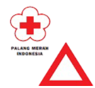
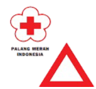

Bantuan Kebencanaan Alam
Daftar lembaga pemerintah atau organisasi non-pemerintah yang menyediakan bantuan bencana, dengan kontak dan informasi penting yang bisa diakses masyarakat.

 



| No. | Kontak | No. Telpon |
|---|---|---|
| 1 | Pusdalops BNPB |
0812-1237575 021-29827666 Fax 021-29827444 |
| 2 | Polisi | 110 |
| 3 | Call Center PPPK Kementerian Kesehatan |
Hotline 1500-567 SMS 0812-81562620 |
| 4 | Telepon Darurat |
112 |
| 5 | Pemadam Kebakaran |
113 |
| 6 | SAR/Basarnas |
115 |
| 7 | Palang Merah Indonesia |
021-4207051 |
| 8 | Palang Merah Indonesia |
021-4207051 |
| 9 | Sentra Informasi Keracunan (Siker) |
021-4250767 021-4227875 |
| 10 | Penerangan |
108 |
| 11 | PLN |
123 |
| 12 | BMKG |
021-6546318 |
| 13 | PVMBG |
022-7272606 |
| 14 | TNI |
021-84595576 |
| 15 | Kementerian Sosial |
0821-11300911 021-5201590 |
| 16 | Kementerian Pekerjaan Umum dan Perumahan Rakyat | 021-7228497 |
| 17 | Ambulans | 118 atau 119 |